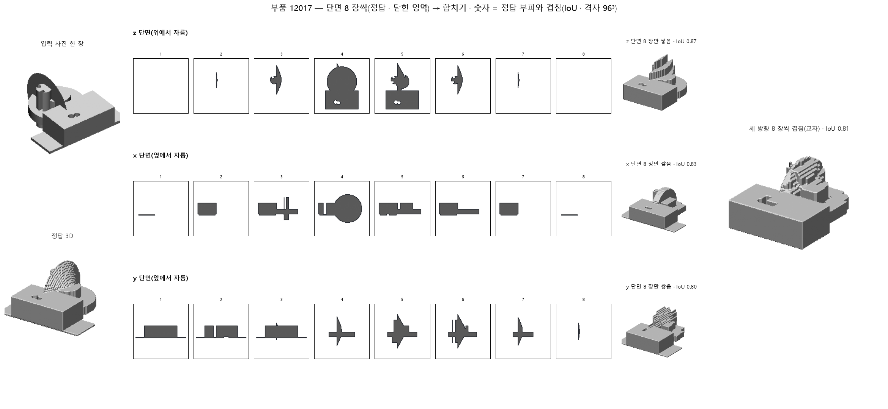

tr206 단면 길 — 사진 한 장에서 단면을 만들어 합치면 되나 (11-16 · 단면206.py · 손으로 정리 · 생각 정리 + 예비 측정)
분석
한 줄로
물음: 입력은 사진 한 장이다(3 시점 · 다중 시점 없음). 모델이 단면을 생성하고 그것을 합쳐(앙상블 · 렌더) 형상을 만드는 길은 어떤가?
답: 정답 단면이면 축마다 8~16 장으로 부피가 0.8~0.9 되살아난다(부품 12017 하나). 세 축을 교차로 합치면 오히려 나빴다(8 장 0.81 < z 만 0.87) — 배우는 합치기가 필요하다. 같은 생각의 논문(Slice3D · CVPR 2024)이 있지만, 입력 조건(정규화 · 카메라 값 · 합성 렌더)을 정해 둔 구조라 그대로는 못 쓴다. 판정은 「관찰 · 다음 D0」이다.
왜 이 판을 했나
tr205 에서 사진 한 장으로는 안 보이는 쪽을 기하로 만들 수 없음을 확인했다. 사용자: 「모델로 처리해야 하는 문제 · 안 보이는 곳을 추론」 「입력이 3 시점이나 다중 시점을 가지고 있어? 아닐거야 · 단면을 생성하고 앙상블? 렌더? 합치는 형식으로」.
바꾼 것 하나
학습 없이 정답 메시를 잘라, 단면 수 · 합치는 방식에 따라 부피가 얼마나 되살아나는지만 봤다(격자 96³).
결과

| 단면 수(축마다) | z 만 | x 만 | y 만 | 세 축 교차 |
|---|---|---|---|---|
| 4 | 0.59 | 0.60 | 0.69 | 0.72 |
| 8 | 0.87 | 0.83 | 0.80 | 0.81 |
| 16 | 0.88 | 0.87 | 0.90 | 0.86 |
| 32 | 0.89 | 0.97 | 0.95 | 0.87 |
숫자 = 정답 부피와 겹침(IoU) · 단면 사이는 가장 가까운 단면으로 채움.
왜 이렇게 나왔나
확인한 것
- 단면은 처음부터 닫힌 영역이다(tr205 의 열린 선 문제가 없다).
- z 8 장은 높이 2.3 짜리 얇은 판을 놓쳤다 — 한 축만 쓰면 그 축 방향으로 얇은 것을 놓친다.
- 단면 1 · 8 번은 화면 틀 전체를 나눠 비었다 — 단면 자리는 물체 범위 안에 놓아야 한다.
- 조사(
claudedocs/research_단면생성_단일이미지CAD_20261116.md): Slice3D 는 축당 4 단면을 회귀 · 확산으로 만들고 트랜스포머로 합친다(축당 2 · 4 · 8 장 CD 2.90 · 2.67 · 2.56). Objaverse 에서는 카메라 축으로 잘라 물체 방향을 추정하지 않는다. 다만 학습 · 시험이 모두 정해 둔 렌더(대각선 1 · 카메라 거리 1.2 · 고도 −10~40°)이고, 합칠 때 카메라 값을 안다고 가정한다. 실물 사진은 몇 장 눈으로만.
짐작 (아직 확인 안 함)
- 교차가 나쁜 것은 축마다 「가장 가까운 단면으로 채움」 오차가 서로를 깎기 때문일 수 있다.
한계
- 부품 하나 · 정답 단면뿐(모델 없음).
배운 것과 다음 (사용자와 정한 원칙 · 11-16)
입력은 지정 못 한다 — 어떤 단계도 입력 조건을 가정하지 않고, 기준은 물체에서, 확인은 겹쳐 본다.
- 입력 조건을 가정하지 않으니 데이터가 더 필요하다: 생성기 렌더 방식 넓히기 · 공개 CAD(라이선스 먼저) · 출력해 찍은 실물. 시험지는 얼리면 손대지 않는다.
- 기준은 물체 틀(최대 길이 1). 사진으로 못 가르는 z 돌림 · 대칭은 손실 · 채점 모두 「가장 잘 맞는 쪽」으로. 「위(z)」 를 가정할지는 사용자 결정 대기.
- 뒷단(3면도 · 단면 → CAD)이 정확하지 않으니 끝단 점수로 앞단을 비교하지 않는다 — 단계마다 그 단계 정답으로. 확인은 겹침 시트(도구 대조 줄 포함).
- 다음: 시험지 얼리기 → D0 천장(개발 99 · 단면 수 · 자리 · 합치기) → D1 작은 앞단 모델.